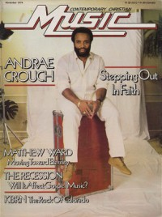

CMnexus
:
Contemporary Christian culture, music, and media.
Magazines
Profiles
Dove Awards
cmnexus.org
CM
nexus
→
Magazine list
→
CCM
→
Issues
Contemporary Christian Music
Nov 1979, vol. 2, iss. 5
< -- Prev
Issue list
Next -- >
Cover

Writers in this Issue
Baker, Paul
Lawhead, Steve
Andraé Crouch
Cover Feature:
"Stepping Out In Faith"
Andraé Crouch
Article:
"Economic Recession"
Interview:
Morgan Maxfield
On The Air:
KBRN
by Paul Baker
Talent:
Matthew Ward
Contact:
Bill Maxwell
What's New:
The Boones
,
The Boone Girls
-
Heavenly Love
Barry McGuire
-
Inside Out
Pat Terry Group
-
Heaven Ain't All There Is
Bob Bennett
-
First Things First
various artists -
On This Christmas Night
Isaac Air Freight
-
In the Air...On the Air
Candle
-
Prep School
Listening In:
audience of Christian radio by Steve Lawhead
Relevant Links
Official web site of CCM
You may be able to find
CCM
in a library near you:
check
Worldcat
< -- Prev
Issue list
Next -- >
CMnexus
(noun)
The magazine index
of modern music
and Christianity
© 2011 CMnexus. Last updated May 2025.
Contact:
Rants and other correspondence to:
editor -AT- cmnexus
-DØT- org
About